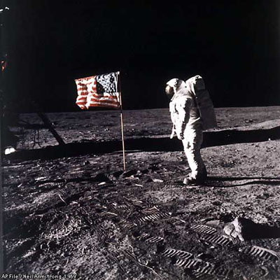

The Command Module Columbia went on a tour of the United States, visiting 49 state capitals, the District of Columbia, and Anchorage, Alaska.[144] In 1971, it was transferred to the Smithsonian Institute, and was displayed at the National Air and Space Museum (NASM) in Washington, DC.[145] It was in the central Milestones of Flight exhibition hall in front of the Jefferson Drive entrance, sharing the main hall with other pioneering flight vehicles such as the Wright Flyer, the Spirit of St. Louis, the Bell X-1, the North American X-15, and Mercury spacecraft Friendship 7.
In November 1969, Nixon asked NASA to make up about 250 presentation Apollo 11 lunar sample displays for 135 nations, the fifty states of the United States and its possessions, and the United Nations. Each display included Moon dust from Apollo 11. The rice-sized particles were four small pieces of Moon soil weighing about 50 mg and were enveloped in a clear acrylic button about as big as a United States half dollar coin. This acrylic button magnified the grains of lunar dust. The Apollo 11 lunar sample displays were given out as goodwill gifts by Nixon in 1970.On July 20, 2009, the crew of Armstrong, Aldrin, and Collins met with U.S. President Barack Obama at the White House.
“We expect that there is, as we speak, another generation of kids out there who are looking up at the sky and are going to be the next Armstrong, Collins, and Aldrin”, Obama said. “We want to make sure that NASA is going to be there for them when they want to take their journey.”[170] On August 7, 2009, an act of Congress awarded the three astronauts a Congressional Gold Medal, the highest civilian award in the United States. The bill was sponsored by Florida Senator Bill Nelson and Florida Representative Alan Grayson.
